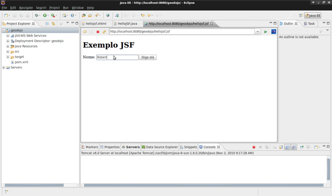
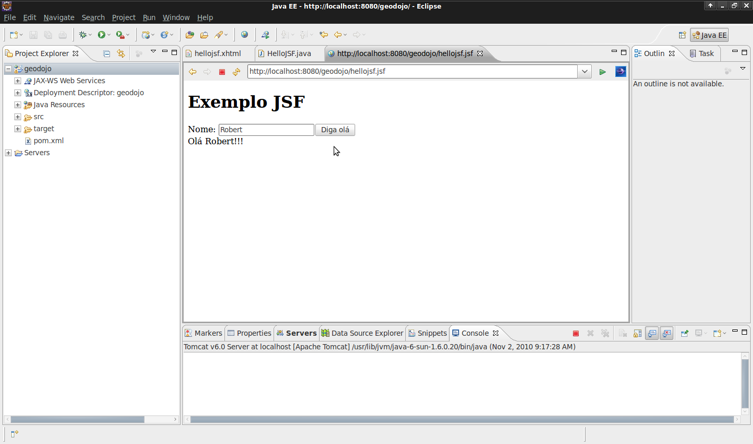

Discutindo a Arquitetura da Aplicação (GEO - JEE6)¶
Contents
Nesse capítulo vamos fazer um breve comentário sobre alguns recursos disponíveis no JEE 6 que iremos utilizar, além de propor uma arquitetura simples, porém funcional, para elaboração de aplicações WebGIS
Java Enterprise Edition¶

Podemos perceber pela imagem acima que o JEE vem evoluindo consideravelmente desde sua primeira versão em meados de 1999. Dessa forma, a versão JEE 6 carrega consigo muita maturidade, obtida ao longo de todos esses anos.
A cada versão podemos perceber a existência de objetivo central que deveria ser atendido. Consideramos a versão 5 da especificação um marco no desenvolvimento de aplicações Java. O grande objetivo do lançamento foi facilitar o desenvolvimento ou seja, tornar o mesmo mais produtivo. O recurso de metaprogramação mais conhecido como anotações na JEE5, foi o primeiro passo para tornar o desenvolvimento mais atraente e menos burocrático, pois, até então, desenvolver em JEE era um grande martírio: dezenas de arquivos de configuração, necessidade de criação de várias classes somente para “agradar” a especificação dentre outros fatores que afastaram consideravelmente os desenvolvedores do mundo Java.
No nosso minicurso, não utilizaremos todos os recursos da nova especificação. Mas não se preocupem, o que veremos aqui será o suficiente para o desenvolvimento de aplicações reais. Além disso, não utilizaremos um servidor JEE completo como o JBoss ou Glassfish, por exemplo, utilizaremos o bom e velho Tomcat, ou seja, é muito fácil arranjar planos de hospedagem a um preço acessível.
Ao final deste roteiro, elaboramos de cortesia um detalhamento prático sobre as tecnologias discutidas neste capítulo.
Arquitetura de nossa aplicação¶
A figura abaixo demonstra de forma sucinta a arquitetura que vamos adotar na nossa aplicação:

Vamos agora dar uma visão geral das responsabilidades de cada camada.
Java Server Faces - JSF¶
É nessa camada onde desenvolveremos as interfaces com o usuário. A tecnologia JSF proporciona uma melhor separação entre as camadas, tendo em vista que o código responsável pelo layout da página (.xhtml) e as regras do negócio (.java) residem em locais distintos.
Para trazer os recursos de geoprocessamento aos formulários e telas da nossa aplicação, vamos utilizar a componente OL4JSF. Desenvolvida a partir da arquitetura de componentes JSF e a api para mapas na web OpenLayers(http://www.openlayers.org) é possível alcançar um alto nível de integração com aplicações JSF além de ampliar o potencial de produtividade do desenvolvimento.
Context and Dependency Injection - CDI¶
Não é nenhuma novidade para os projetos em JAVA modernos utilizarem recursos de injeção de dependencia e contextos. Depois de diversos frameworks lograrem sucesso ao desenvolver mecanismos de injeção e contextos personalizados, eis que a JCP termina por decidir analisar todos os pontos positivos de cada framework e empacotar tudo numa especificação dentro da stack da JEE6 batizada de Context and Dependency Injection ou para os intimos CDI. O mais interessante desta nova especificação foi a integração do ciclo de vida de todos os componentes JEE(servlets, managed beans jsf, enterprise java beans e etc) dentro de um conjunto de contextos(AplicaçÃo, Sessão, Requisição, Conversação). Em resumo toda componente é reduzido ao conceito de bean gerenciado pelo CDI possibilitando a injeção de forma genérica e integrado.
Para o nosso projeto vamos utilizar o CDI para:
- Injetar o EntityManager JPA nas classes onde se faz necessário o acesso a dados;
- Criar e injetar managed beans para tratar eventos, ações e dados das views JSF;
- Gerenciar os contextos da aplicação ResquestScope e SessionScope;
De uma forma geral, vamos ver na prática como ficou RIDICULO o desenvolvimento de aplicações JEE com baixo acoplamento e alta coesão.
O CDI possui diversos recursos que tornam a vida do arquiteto mais fácil: Interceptors, decorators, qualifiers, stereotypes, etc. Vale a pena fazer uma leitura na documentação de referência do CDI.
Java Persistence Api - JPA¶
Quem nunca ouviu falar do Hibernate? É isso mesmo. Essa especificação veio padronizar aquilo que muitos desenvolvedores já utilizavam há bastante tempo. Hoje, o Hibernate é somente uma das possíveis implementações de JPA.
Certo, a utilização do Hibernate eu até compreendo, por que apareceu esse tal de hibernate-spatial? A JPA resolve muito bem o mapeamento objeto-relacional de tipos convencionais dos SGBDs (varchar, numeric, date, etc), porém em aplicações geoespaciais precisamos lidar com estruturas de dados geométricas e é aí onde a Java Persistence Api não é mais suficiente. Precisamos de alguma forma mapear esses tipos em nossas classes e o Hibernate fornece uma anotação (@Type) que nos permite isso.
Já o hibernate-spatial, fornece um dialeto do hibernate responsável por reconhecer esses novos tipos e fazer o “trabalho sujo” para nós, gerando os SQLs necessários e tornando a tão sonhada independência de banco menos traumática.
OK! Como JSF, CDI e JPA fechamos a parte JEE de nossa aplicação. Agora restam somente dois artefatos: o GeoServer e o Postgis.
Geoserver¶
Não detalharemos o geoserver, pois ele será visto em capítulos posteriores. Mas para aguçar a curiosidade, podemos dizer que ele é responsável por disponibilizar os mapas, obtidos através de diversas origens, em formatos padronizados e reconhecíveis pelo OL4JSF. Achou interessante? Espere então só mais um pouco para ver o que esse cara é capaz de fazer.
Definindo a Arquitetura no Projeto JAVA¶
Vamos preparar a nossa aplicação para realizar a arquitetura descrita. Para isso vamos complementar o nosso projeto maven com as dependencias necessárias e definir os arquivos de configuração para que tudo funcione.
Vamos adicionar as seguintes dependencias no arquivo pom.xml do nosso projeto.
JSTL
- SERVLET API
- JSF / JSF-API
- CDI-API
- WELD
- Hibernate / Hibernate Spatial
- Postgres / Postgis JDBC Driver
- OL4JSF
Arquivo pom.xml atualizado
<project xmlns="http://maven.apache.org/POM/4.0.0" xmlns:xsi="http://www.w3.org/2001/XMLSchema-instance"
xsi:schemaLocation="http://maven.apache.org/POM/4.0.0 http://maven.apache.org/maven-v4_0_0.xsd">
<modelVersion>4.0.0</modelVersion>
<groupId>org.latinoware.geodojo.app</groupId>
<artifactId>geodojo</artifactId>
<packaging>war</packaging>
<version>1.0-SNAPSHOT</version>
<name>geodojo Maven Webapp</name>
<url>http://www.latinoware.org</url>
<repositories>
<repository>
<id>java.net2</id>
<name>Repository hosting the jee6 artifacts</name>
<url>http://download.java.net/maven/2</url>
</repository>
<repository>
<id>OSGEO GeoTools repo</id>
<url>http://download.osgeo.org/webdav/geotools</url>
</repository>
<repository>
<id>Hibernate Spatial repo</id>
<url>http://www.hibernatespatial.org/repository</url>
</repository>
<repository>
<id>JBOSS</id>
<url>http://repository.jboss.com/maven2</url>
</repository>
</repositories>
<dependencies>
<dependency>
<groupId>junit</groupId>
<artifactId>junit</artifactId>
<version>4.0</version>
<scope>test</scope>
</dependency>
<!-- SERVLET -->
<dependency>
<groupId>javax.servlet</groupId>
<artifactId>jstl</artifactId>
<version>1.2</version>
</dependency>
<dependency>
<groupId>javax.servlet</groupId>
<artifactId>servlet-api</artifactId>
<version>2.5</version>
</dependency>
<!-- CDI -->
<dependency>
<groupId>javax.enterprise</groupId>
<artifactId>cdi-api</artifactId>
<version>1.0-SP1</version>
<scope>compile</scope>
</dependency>
<dependency>
<groupId>org.jboss.weld</groupId>
<artifactId>weld-api</artifactId>
<version>1.0-SP1</version>
<scope>runtime</scope>
</dependency>
<dependency>
<groupId>org.jboss.weld.servlet</groupId>
<artifactId>weld-servlet</artifactId>
<version>1.0.1-Final</version>
<scope>runtime</scope>
</dependency>
<!-- JSF -->
<dependency>
<groupId>com.sun.faces</groupId>
<artifactId>jsf-api</artifactId>
<version>2.0.3</version>
<scope>compile</scope>
</dependency>
<dependency>
<groupId>com.sun.faces</groupId>
<artifactId>jsf-impl</artifactId>
<version>2.0.3</version>
<scope>runtime</scope>
</dependency>
<!-- JPA/Hibernate -->
<dependency>
<groupId>hibernate</groupId>
<artifactId>hibernate-entitymanager</artifactId>
<version>3.4.0.GA</version>
</dependency>
<dependency>
<groupId>org.slf4j</groupId>
<artifactId>slf4j-simple</artifactId>
<version>1.5.6</version>
</dependency>
<dependency>
<groupId>org.slf4j</groupId>
<artifactId>slf4j-api</artifactId>
<version>1.5.6</version>
</dependency>
<!-- Hibernate Spatial Postgis -->
<dependency>
<groupId>org.hibernatespatial</groupId>
<artifactId>hibernate-spatial-postgis</artifactId>
<version>1.0</version>
</dependency>
<!-- Postgis JDBC driver -->
<dependency>
<groupId>org.postgis</groupId>
<artifactId>postgis-jdbc</artifactId>
<version>1.3.3</version>
</dependency>
<!-- Postgresql JDBC driver -->
<dependency>
<groupId>postgresql</groupId>
<artifactId>postgresql</artifactId>
<version>8.4-701.jdbc3</version>
</dependency>
<!-- OL4JSF -->
<dependency>
<groupId>org.ol4jsf</groupId>
<artifactId>ol4jsf-core</artifactId>
<version>2.0-SNAPSHOT</version>
<scope>compile</scope>
</dependency>
</dependencies>
<properties>
<project.build.sourceEncoding>UTF-8</project.build.sourceEncoding>
</properties>
<build>
<finalName>geodojo</finalName>
<plugins>
<plugin>
<groupId>org.apache.maven.plugins</groupId>
<artifactId>maven-compiler-plugin</artifactId>
<configuration>
<source>1.6</source>
<target>1.6</target>
</configuration>
</plugin>
</plugins>
</build>
</project>
Na sequência vamos rodar o comando do maven para preparar as novas dependencias dentro do ambiente de desenvolvimento:
user@geodojo-vm:~/geodojo/geodojo$ mvn -Dwtpversion=1.5 eclipse:eclipse
Precisamos agora configurar a nossa aplicação web para atuar com o JSF e CDI. Para isso vamos deixar o arquivo web.xml como abaixo
<?xml version="1.0" encoding="UTF-8"?>
<web-app version="3.0" xmlns="http://java.sun.com/xml/ns/javaee"
xmlns:xsi="http://www.w3.org/2001/XMLSchema-instance"
xsi:schemaLocation="http://java.sun.com/xml/ns/javaee http://java.sun.com/xml/ns/javaee/web-app_3_0.xsd">
<listener>
<listener-class>org.jboss.weld.environment.servlet.Listener</listener-class>
</listener>
<resource-env-ref>
<description>Object factory for the CDI Bean Manager</description>
<resource-env-ref-name>BeanManager</resource-env-ref-name>
<resource-env-ref-type>javax.enterprise.inject.spi.BeanManager</resource-env-ref-type>
</resource-env-ref>
<servlet>
<servlet-name>Faces Servlet</servlet-name>
<servlet-class>javax.faces.webapp.FacesServlet</servlet-class>
<load-on-startup>1</load-on-startup>
</servlet>
<servlet-mapping>
<servlet-name>Faces Servlet</servlet-name>
<url-pattern>*.jsf</url-pattern>
</servlet-mapping>
</web-app>
- Na sequência vamos criar um simbolico faces-config.xml. No final deste roteiro vamos entender o porque de simbolico.
<?xml version="1.0"?>
<faces-config version="2.0" xmlns="http://java.sun.com/xml/ns/javaee"
xmlns:xi="http://www.w3.org/2001/XInclude"
xmlns:xsi="http://www.w3.org/2001/XMLSchema-instance" xsi:schemaLocation="http://java.sun.com/xml/ns/javaee http://java.sun.com/xml/ns/javaee/web-facesconfig_2_0.xsd"/>
- Para que o CDI funcione corretamente vamos precisar adicionar os arquivos context.xml e beans.xml na pasta META-INF do projeto
<Resource
name="BeanManager"
auth="Container"
type="javax.enterprise.inject.spi.BeanManager"
factory="org.jboss.weld.resources.ManagerObjectFactory"
/>
<?xml version="1.0"?>
<beans xmlns="http://java.sun.com/xml/ns/javaee" xmlns:xsi="http://www.w3.org/2001/XMLSchema-instance"
xsi:schemaLocation="http://java.sun.com/xml/ns/javaee http://java.sun.com/xml/ns/javaee/beans_1_0.xsd">
</beans>
Para testar o funcionamento vamos criar um pequeno exemplo. Nele o usuário digita o nome e clica no botão “Diga olá”.
- 5.1. Vamos criar uma view jsf denominada hellojsfcdi.xhtml na pasta src/main/webapp/hellojsfcdi.xhtml:
<!DOCTYPE html PUBLIC "-//W3C//DTD XHTML 1.0 Transitional//EN" "http://www.w3.org/TR/xhtml1/DTD/xhtml1-transitional.dtd"> <html xmlns="http://www.w3.org/1999/xhtml" xmlns:h="http://java.sun.com/jsf/html" xmlns:f="http://java.sun.com/jsf/core" xmlns:ui="http://java.sun.com/jsf/facelets" xmlns:m="http://www.ol4jsf.org"> <h:head> </h:head> <body> <h1>Exemplo JSF - CDI</h1> <h:form prependId="false"> Nome: <h:inputText value="#{helloJSF.nome}" /> <h:commandButton value="Diga olá" action="#{helloJSF.sayHello}"> </h:commandButton> <br/> <h:outputText id="output" binding="#{helloJSF.output}" /> </h:form> </body> </html>
- 5.2. Vamos criar a classe java org.latinoware.geodojo.app.bean.HelloJSF que vai atender as necessidades da view hellojsfcdi
package org.latinoware.geodojo.app.bean; import javax.enterprise.inject.Model; import javax.faces.component.UIOutput; /** * Bean para exemplificar o modelo orientado a eventos do JSF * * @author ranophoenix * */ @Model public class HelloJSF { private String nome; private UIOutput output; public String getNome() { return nome; } public void setNome(String nome) { this.nome = nome; } public UIOutput getOutput() { return output; } public void setOutput(UIOutput output) { this.output = output; } public void sayHello() { output.setValue("Olá " + nome + "!!!"); } }
5.3. Executar o exemplo e verificar os resultados. Se tudo estiver correto no nosso projeto as telas abaixo devem ser verdadeiras.

A partir desse momento é executada uma ação no servidor e retornada a mensagem para o usuário.

O CDI é tão simples que utilizamos no exemplo quase sem perceber. Os menos atentos talvez nem tenham percebido a existência da anotação @Model e que nenhum ManagedBean foi definido no arquivo faces-config.xml. Sabe o que aconteceu após a simples presença da anotação @Model ? Basicamente:
- A classe HelloJSF passou a ficar disponível nas páginas JSF através do nome “#{helloJSF}”;
- A classe ganhou o escopo de requisição automático;
No próximo capítulo, iremos abordar falar sobre o HibernateSpatial.